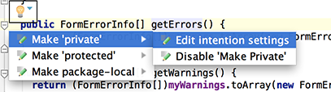

When you press &shortcut:ShowIntentionActions; to invoke a quick fix or intention action, press the right arrow key to reveal the list of additional options.
Depending on the context, you can choose to disable inspection, fix all problems, change inspection profile, etc.
